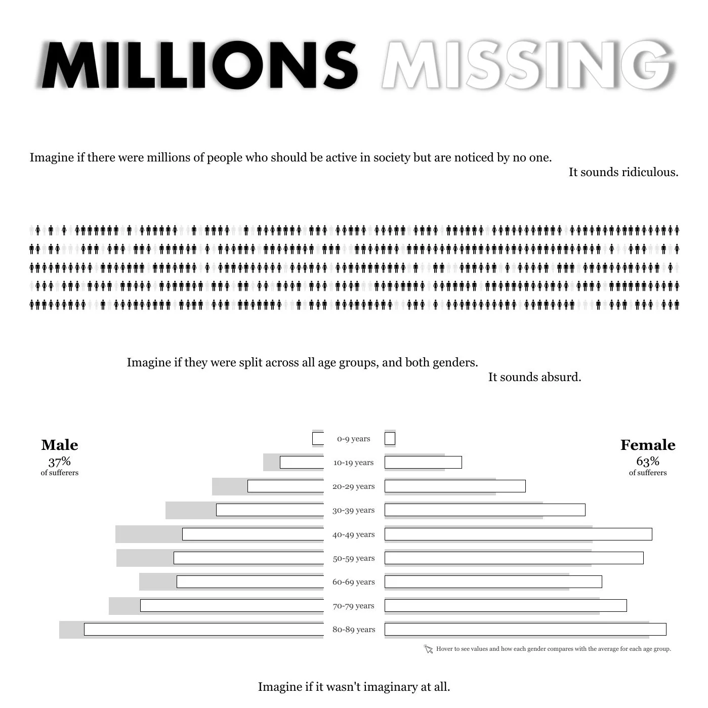
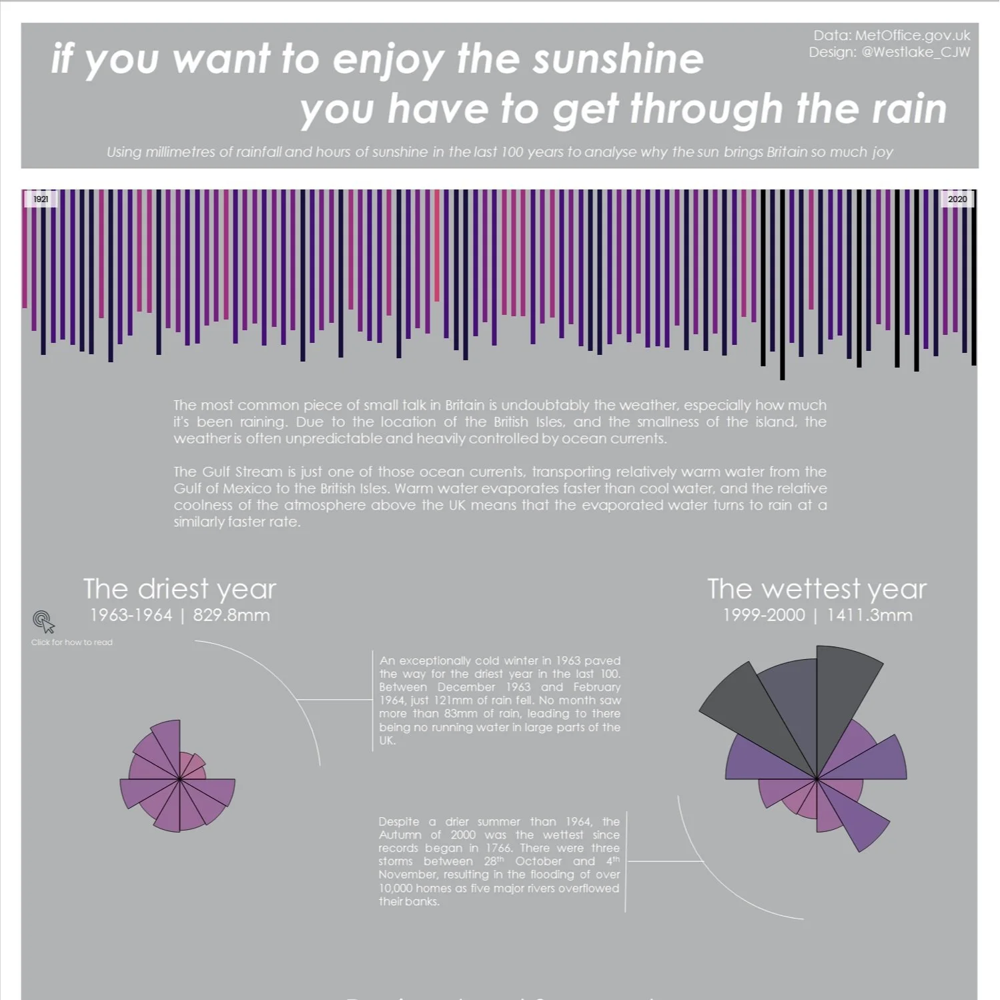
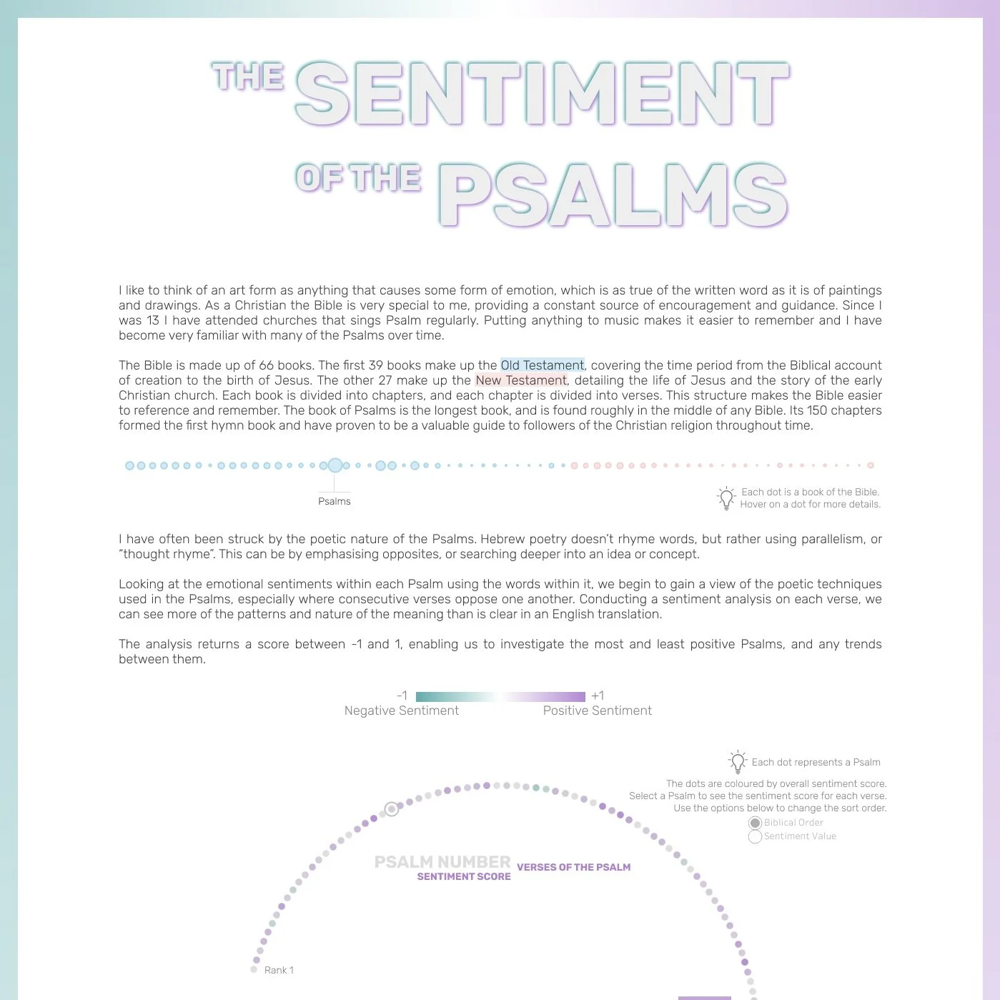
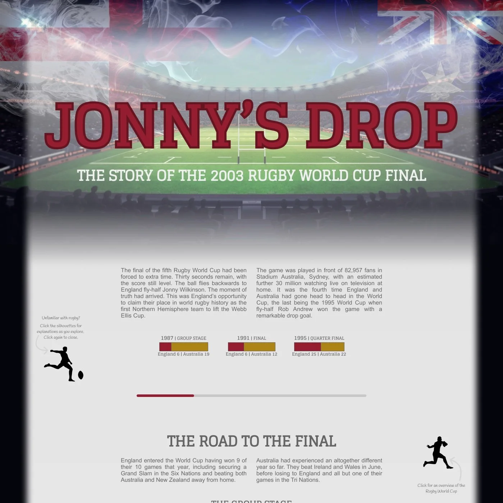
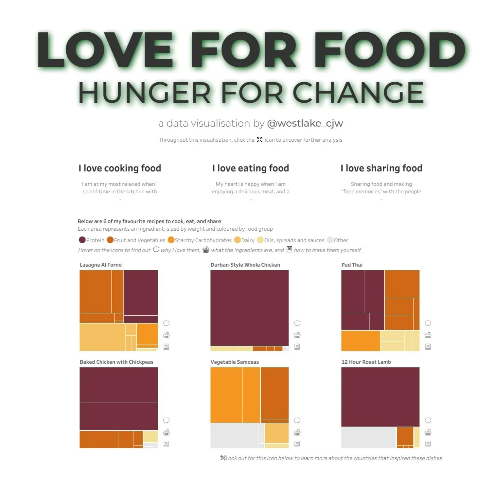

Hi! I’m Chris Westlake, long time data nerd and recently crowned 2024 Global Iron Viz Champion. I have been obsessed with data for nearly 20 years, and in 2018 started to channel that obsession into one tool: Tableau. One thing that caught my eye about Tableau when I first discovered it was its community – more specifically, how that community unites around one special event each year. Iron Viz.
What is Iron Viz?
Iron Viz is the biggest data visualisation competition of its kind. Once a year, Tableau users globally are invited to enter a feeder round, with a prompt, or theme, given to be followed. Entries are judged against three criteria: analysis, design, and storytelling. The successful result will be a dashboard that fulfils all of these criteria – an elegant piece of in-depth analysis that guides the user through a story told with data. The top three entries to the feeder progress to the final – a live, on-stage performance at Tableau Conference. In front of roughly 7,000 attendees, the finalists are given the same data set to analyse, and 20 minutes to build a dashboard that satisfies those same criteria: analysis, design, and storytelling. All of this is wrapped up under the slogan, “Win or learn, you can’t lose”. I have certainly found this to be the case.
My Iron Viz Journey
2024 was my fifth time entering Iron Viz, and each year that I entered I learnt a load of new techniques for the full data visualisation development process. Below are links to each of my entries through the years, and a brief summary of them.





After sitting out the 2019 round of Iron Viz qualifiers, I decided to enter the competition for the first time in 2020. The theme that year was health and wellbeing, and my visualisation was focused on the condition Myalgic Encephalomyelitis / Chronic Fatigue Syndrome. I was immensely proud of myself for entering, though looking back my viz did not fulfil the criteria well at all. There was not nearly enough data available to allow a detailed analysis. The design was lacking, featuring a monochrome colour palette, no whitespace, and charts that were all formatted differently in a manner that causes me no end of stress to look at now. Storytelling with data was such a new concept to me that I wouldn’t have recognised it if it was standing right in front of me holding a sign!
A year later, in 2021, the feeder theme was released just before I had some time off work which gave me plenty of opportunity to create something that I could be proud of. The theme, similar to this year’s, was to viz what makes you happy. I chose sunshine, and my entry looked at the number of sunny days vs rainy days in the UK over time. Spoiler alert – there are a lot more rainy days than sunny days! In the interim time, I had been exploring design more and used PowerPoint to create a background that I felt elevated the piece. That said, I was still missing a certain “so what?” factor.
In 2022 the theme was arts and literature, and I created a visualisation that I am still proud of looking back now – possibly the earliest of my “passion projects” that I can say that about. I used R to conduct a sentiment analysis of the Psalms of the Bible, rating every verse of every Psalm according to the positivity or negativity of its language. This was one of the first times I had allowed my personal interests to come across in a visualisation, making myself vulnerable in a way that I was very uncomfortable with. I enjoyed creating my 2022 entry more than the others, I think because of the personal nature of it. This became key in the next entry that I submitted.
Games was the theme in 2023, and, as an avid rugby union fan who grew up in England, there is one game that stands out from any other – the 2003 Rugby World Cup Final. This was an event that I was familiar with. It was an event that I had, in a sense, analysed for fun throughout my childhood. It had a story ready baked in, and plenty of data available to help tell that story. The visualisation followed England and Australia through the 2003 Rugby World Cup, analysing the scoreline of each game that lead them to the final. I compared the starting lineups of both teams, and created an annotated, play-by-play, timeline of the final itself. People with no interest in rugby told me that the storytelling aspect of it made them both nervous and excited to see how the game unfolded - going into extra time before a last-minute Jonny Wilkinson drop goal clinched victory for England on Australian soil. The visualisation placed in the top 5 for the EMEA region that year, which gave me extra encouragement to enter the following year.
In 2024 I entered Iron Viz for the fifth time. The theme this year was to viz what you love. Using what I had learnt from my previous four times entering, I knew that with so broad a prompt given by Tableau, I needed to be very specific with the topic I chose to focus on. After some deliberation I landed on food – my love for it, and my dislike of the fact that not everyone has it. I was astounded when I discovered that this visualisation had found its way into the top 3 in the world, and that I was headed to the global final in San Diego. Initially I was delighted, ecstatic, over the moon. And then the dread set in. I was pitted against two incredibly talented individuals in Jessica Moon and Patricia Gogova, and knew that I would have my work cut out if I was to emerge successful.
Below is the dashboard that I build in the 20 minutes on stage. Let me take you briefly through how I went from a truly gigantic data set to a polished dashboard with an accompanying story.
The Final Dataset
Finalists receive the data for Iron Viz a month before the final, giving a chance to conduct analysis, uncover a story, and settle on a design, before the 20 minute timer starts. Once the data arrived, I knew I couldn’t waste a moment. The data for this year’s final was provided by IMDb, as part of an ongoing collaboration between IMDb and Tableau. To say there was a lot of data would be an understatement. The dataset covered every episode of television dating back to 1927, with details of ratings, cast members, and awards. My interrogation of the data started slowly. I grew up without a TV at home (really!) so couldn’t rely as much on existing knowledge of the data. Dragging and dropping until I was blue in the face, I could not find a story that I felt was worthy of the stage, with a personal touch that would enable me to present it with sufficient passion to win.
To help me on the data discovery journey, I started asking friends what their favourite TV show was, and why. My hope was that I would find some trends, but what I found was perhaps the opposite. Everyone I spoke to had a different favourite TV show, some of which were shows I had never even heard of. People don’t want to explore data for TV shows that they aren’t interested in, so I decided to make it more personal to the individual user. The idea of the explorer was born. A self-service tool of sorts that allows you to investigate your favourite show, and maybe find a new show to watch next.
What followed was a trimming of the data in Tableau Prep. Only the 250 most voted for shows were kept, and I also removed any fields not being used in analysis. As my ideas evolved, so did the data. The largest part of the data prep was for the radial chart that was always going to be a main feature of the dashboard. Ultimately this required some data densification, and a lot of trigonometry, to create the points needed for Tableau to be able to plot the dots and draw the lines that made up the finished chart.
With a solid idea and a dataset to enable it, I was ready to start developing the dashboard more particularly in Tableau. In Iron Viz, visualisations are judged according to three criteria (analysis, design, and storytelling), each with equal weighting. Let’s look briefly at how I approached each of them in turn.
The Final Analysis
The nature of The IMDb Explorer meant that a lot of the analysis is uncovered in the storytelling element of the final, but the tools are there for you to conduct analysis yourself, as demonstrated by my on-stage presentation.
The dataset was limited in that there were very few measures available to use in analysis. The main one is, of course, IMDb’s famous rating of episodes and series. Starting with the series rating, the dashboard allows you to compare the rating of shows with a number of different metrics on the landing page. Once a show is selected, you are able to see the ratings of each episode of the show. This is aggregated at a season level (something not easily available on IMDb’s website) and compared with the series rating. This leads into a notion of outliers, highlighting episodes rated unusually high given the rating of the show as a whole.
The top cast members are shown, highlighting their influence on the selected show, and also allowing an analysis of various aspects of their career. Selecting a cast member, you can see all of the television episodes they feature in, arranged by year of release. This allows for an analysis of trends in an actor’s contribution to the television industry, as well as highlighting any gaps. The final page looks at awards, split into 3 types of award. While in depth details of each award is only available for TV awards, this does give some insight into the wider career of an actor and demonstrates any success they had in other areas of the entertainment industry.
The Final Design
Design is the element of creating a dashboard that I probably enjoy the most. There is a challenge in making a design engaging and attractive so as to encourage attention, but also keeping it simple so as not to detract from the message of the analysis. There are several design techniques that I used to enable this in The IMDb Explorer.
Colour was used very sparingly in the visualisation, and every colour has its own distinct meaning and reason for being chosen. On the front page you see a lot of yellow, appealing to the connection our brain makes with IMDb’s branding. The blue is used to highlight the show selected, and then follows through to future pages. Red is a standout colour that we often use to alert people to important information, like outliers in a dataset. The rest of the dashboard relies on various shades of grey to display the data without dominating the display.
Chart types are also very important when designing a dashboard. It was vital for me that this dashboard be understood easily, with minimum effort required by the audience watching live to interpret what they were seeing. I used a combination of scatter plots and bar charts to display the data as these are chart types that we are most familiar with. There was also the radial chart, but maybe that is a discussion for another day…
Given the medium through which most people would be consuming this dashboard (on a large screen at the front of a very big room), it was important that it could be seen easily at a distance. This led to the use of outlined dots instead of regular circles, and a use of Tableau Medium as a slightly bolder alternative to Tableau Book. Any font important to the story is 12pt or larger, making it easier for the viewer to read and gain additional understanding.
The Final Storytelling
In the Iron Viz final, a large part of the storytelling marks are allocated via the 3 minute presentation that contestants are required to give after they have built their dashboard. I made sure that the story flowed through each of my charts, with a new chapter being revealed on each new page.
Appealing to several thousand viewers at once was never going to be easy, but by picking one of the world’s favourite TV shows to dive into I knew that I would have the interest of at least half of the room from that alone. I began each section of my story with a question as a technique to keep the audience engaged and trying to guess what would come next. The reaction that my story created in the room was astounding and proved to me that I had succeeded in creating something that people could understand, get behind, and love.
//
Do you want to know more about how I utilised analysis, design, and storytelling in my quest to become the 15th Global Iron Viz Champion? Over the next few weeks, I’ll be sharing more details and tips that I hope will be useful to you in your own journey to be a better analyst and maybe even create the next great data viz.
Take care // Chris